geometria analítica e álgebra linear, do primeiro desenho
à imagem gerada por computador
Uma imagem é uma tabela de números — e
onde cada coisa está, e quão longe, é
decidido por geometria.
Cinco estações, de matrizes a pixels. Nenhum pré-requisito
além do colégio: cada símbolo aparece antes de ser usado.
Autor · Mateus Felipe Alkimim Pereira
Orientador · Rosivaldo Antônio Gohnan
Apresentação · o ofício do autor
O ofício por trás do método
O Gênio do Crime (2026) longa de cinema ·
composição Globo Filmes/BoutiqueAmor da Minha Vida (2024–) série ·
composição Disney+A Magia de Aruna (2023) série ·
composição Disney+
A arte e a ciência se encontram em
seus métodos. Meu ofício é Compositor Digital —
foi nestas produções que eu o exerci. É do conhecimento de artista, e da
aspiração a cientista, que nasce esta aula.
imagens: divulgação oficial (Paris Filmes · Disney) — uso editorial
do registro ao pixel
O mapa da viagem
Cinco estações, uma pergunta
1
Matrizes
o que é uma imagem: uma grade de números — a matriz
antes de qualquer conta
para a pergunta: é NELA que a profundidade vai ser lida
→
2
Vetores
o que é um vetor — desenhando, antes de qualquer
número
para a pergunta: profundidade ainda não existe aqui: só direção, sentido e comprimento
→
3
Coordenadas
coordenadas: cada ponto vira três números; a forma
vira uma tabela (matriz)
para a pergunta: a origem vira o olho — e "longe" ganha endereço
→
4
Equações
sistemas lineares: onde uma reta encontra um
plano
para a pergunta: cada pixel vira um sistema; a solução é o ponto que ele mostra
→
5
Pixels
a mesma matemática dentro de um modelo generativo
de imagem
para a pergunta: duas réguas medem o mesmo longe — e uma delas não carrega tudo
A pergunta que amarra tudo: quão
longe está, de quem olha, cada coisa que a imagem mostra?
A resposta muda a cada estação — e é essa mudança que
é a matéria.
Régua é o nome curto para o jeito de medir esse
longe. Na última estação haverá duas.
do registro ao pixel
antes de começar · como ler os símbolos
As convenções que valem a viagem inteira
A matemática escreve com convenções que quase nunca são ditas em voz
alta. Ditas, elas deixam de ser barreira: você passa a decifrar um
símbolo novo sem esperar que alguém o apresente.
\(A\), \(B\), \(P\)
maiúscula
inclinada — um ponto do espaço. Lê-se "a", "bê",
"pê"
\(E\), \(M\), \(R\)
a maiúscula também nomeia o
objeto grande: o espaço inteiro, uma tabela de números, uma relação.
Qual deles é, a folha diz na hora
\(\vec v\), \(\overrightarrow{AB}\)
seta em
cima — um vetor: a família de setas, não uma seta
só
\(x\), \(y\), \(z\)
minúscula
inclinada — as coordenadas: largura, profundidade,
altura
\(k\), \(t\), \(h\)
a minúscula também é um número
comum: o que estica, o instante, a altura
\(\alpha\), \(\theta\), \(\rho\)
letra
grega — o que se mede: um ângulo, um ângulo, uma
distância. Nunca é o assunto da folha; é a medida dele. Lê-se
"alfa", "teta", "rô"
\(\mathbb{R}\)
letra vazada — todos
os números reais. Lê-se "erre"
\(\|\vec v\|\) e \(|k|\)
duas
barras é comprimento — a norma; uma barra é
o número sem o sinal. Parecidas na página, diferentes no que
medem
sen, cos, tg
letra em pé — nome de
operação, não letra que vale um número
a forma da letra já diz de que
família o símbolo é. Reconhecida a família, um símbolo que você nunca
viu deixa de ser obstáculo: você lê a forma dele e já sabe o que
esperar.
do registro ao pixel
Estação 1 · matrizes
O que é uma imagem: uma tabela de números
Cada quadradinho é um pixel, e cada pixel guarda
um número: 0 é preto, 255 é branco, e o meio do
caminho são os cinzas.
Em matemática, essa tabela tem nome: uma matriz de ordem
\(m \times n\) — \(m\) linhas e \(n\) colunas de
números.
"eme por ene".
Cada entrada se chama \(a_{ij}\): o número que mora na linha
\(i\), coluna \(j\). A casinha ao lado é uma matriz de ordem
\(8 \times 12\) — e a célula destacada é
\(a_{3,5} = 70\): terceira linha, quinta coluna.
"a i j".
j→
1
2
3
4
5
6
7
8
9
10
11
12
1
235
235
235
235
235
235
235
235
235
235
235
235
2
235
235
235
235
235
70
70
235
235
235
235
235
3
235
235
235
235
70
70
70
70
235
235
235
235
4
235
235
235
70
70
70
70
70
70
235
235
235
5
235
235
235
165
165
165
165
165
165
235
235
235
6
235
235
235
165
165
95
95
165
165
235
235
235
7
235
235
235
165
165
95
95
165
165
235
235
235
8
205
205
205
205
205
205
205
205
205
205
205
205
i ↓ linhas · j → colunas
afaste os olhos da tela: os números viram uma casinha — porque os
números são a imagem
do registro ao pixel
Estação 1 · matrizes
A ordem da matriz é o que o dia a dia chama de resolução
Trocar de resolução é trocar de ordem da matriz — e
o "número de pixels" que se anuncia é a área dessa
tabela: linhas vezes colunas.
a folha que você está vendo tem
1 011 712 números por canal. Um 4K tem oito vezes
isso. É a mesma ideia, em escalas diferentes.
Repare na ordem: a matriz diz
linhas × colunas — altura primeiro. Por isso o Full HD
é a matriz \(1080 \times 1920\), embora o comércio anuncie
"1920×1080", largura primeiro. Mesma tabela, duas
gramáticas.
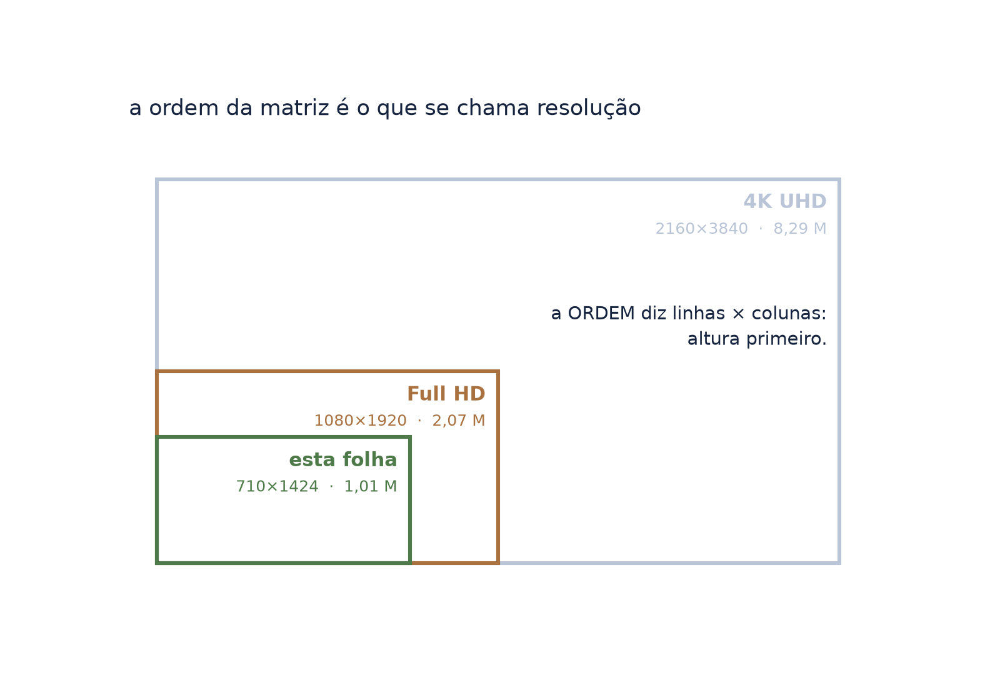
do registro ao pixel
Estação 1 · matrizes — os três canais
O canal R (vermelho) é uma tabela de números
o canal R da pintura do crepúsculo — por natureza, dessaturado: um
mapa cinza de intensidade
245
245
245
245
245
245
245
245
245
245
245
245
245
245
245
245
245
245
245
245
245
244
244
244
245
245
245
245
245
245
245
245
245
244
244
245
245
245
245
245
245
245
245
245
245
245
245
245
243
245
245
243
245
244
244
243
243
243
243
243
242
243
243
242
243
243
243
242
243
242
243
243
239
239
240
238
239
239
241
241
241
239
236
239
237
237
238
238
236
237
237
234
237
235
235
235
os valores exatos do canal R na janela marcada,
cruzando o horizonte (12×8 pixels, passo 8) — mesma janela nos três
slides: só os números mudam
do registro ao pixel
Estação 1 · matrizes — os três canais
O canal G (verde) é uma tabela de números
o canal G da pintura do crepúsculo — por natureza, dessaturado: um
mapa cinza de intensidade
223
224
224
224
224
224
223
223
222
219
220
220
224
224
225
224
223
225
223
223
222
220
220
219
223
223
224
223
223
223
222
221
221
218
219
218
223
223
222
223
222
221
219
219
215
215
212
211
221
221
220
217
216
211
212
209
207
205
205
205
212
211
209
207
207
206
200
199
198
195
195
197
179
173
175
169
170
169
172
177
173
175
158
170
157
157
157
156
150
152
148
142
149
146
145
145
os valores exatos do canal G na janela marcada,
cruzando o horizonte (12×8 pixels, passo 8) — mesma janela nos três
slides: só os números mudam
do registro ao pixel
Estação 1 · matrizes — os três canais
O canal B (azul) é uma tabela de números
o canal B da pintura do crepúsculo — por natureza, dessaturado: um
mapa cinza de intensidade
108
108
107
107
107
107
106
106
104
102
102
103
108
108
107
107
107
107
107
105
105
103
103
102
107
107
107
107
107
107
105
104
103
101
101
100
106
105
105
106
105
104
102
101
99
99
97
97
104
103
102
100
99
97
98
96
94
94
93
94
98
98
95
94
95
95
93
91
91
90
89
89
81
79
80
76
80
80
81
86
84
86
76
83
74
74
76
76
72
74
75
72
76
76
76
76
os valores exatos do canal B na janela marcada,
cruzando o horizonte (12×8 pixels, passo 8) — mesma janela nos três
slides: só os números mudam
do registro ao pixel
Estação 1 · matrizes
A cor que enxergamos: multiplicar e somar
++=
Cada canal cinza é multiplicado
pela sua cor primária e os três se
somam — luz soma. É esta
conta, feita pixel a pixel:
Num pixel só: o canto inferior esquerdo da janela das
três tabelas anteriores tem
R = 237,
G = 157 e
B = 74 — muito
vermelho, verde médio, pouco azul. A conta devolve
este alaranjado: é o brilho do crepúsculo logo abaixo do horizonte.
"lê-se: a imagem I é o canal R vezes o vermelho puro, mais o canal G
vezes o verde puro, mais o canal B vezes o azul puro" — a soma acima
reconstrói a imagem original exata, pixel a pixel
(conferido por programa). Três tabelas de números, três cores, uma
soma: esta é toda a imagem final.
do registro ao pixel
Estação 1 → Estação 2 · a ponte
As tabelas são planas — o mundo que elas mostram é fundo
A computação gráfica — do cinema, dos games, do
ofício da página 2 — faz o caminho inverso do que
acabamos de ver: primeiro constrói um mundo em três
dimensões (objetos, câmera, luz) e só no fim o achata nas
tabelas de pixels. Esse achatamento tem nome: render.
Para construir esse mundo, cada
ponto precisa de um endereço no espaço — três números, não dois. E a
ferramenta que constrói esses endereços começa humilde: uma seta.
DNA do Crime (Netflix) e
A Magia de Aruna (Disney+) — o autor compôs nas duas
(divulgação · uso editorial)
do registro ao pixel
Estação 2 · vetores
O palco em três dimensões: onde tudo desta aula acontece
Nenhuma figura deste seminário flutua no vazio. Todas moram no
mesmo palco, e ele se declara antes de desenhar
qualquer coisa — como se abre um arquivo novo num software 3D e a
primeira coisa que aparece é a grade do chão.
\(x\)
largura — deitado no chão,
para os lados
\(y\)
profundidade — deitado no
chão, para dentro da cena
\(z\)
altura — sai do chão, para
cima
\(z = 0\)
o plano do olho; é ele que a imagem
mostra como linha do horizonte
"zê igual a zero".
o chão é o plano \(xy\); a altura é \(z\).
O horizonte não é uma linha pintada no mundo: é a altura dos seus
olhos, vista de longe — por isso ele acompanha você.
Por que a origem é o olho, e por que as letras são
justamente estas — Estação 2.
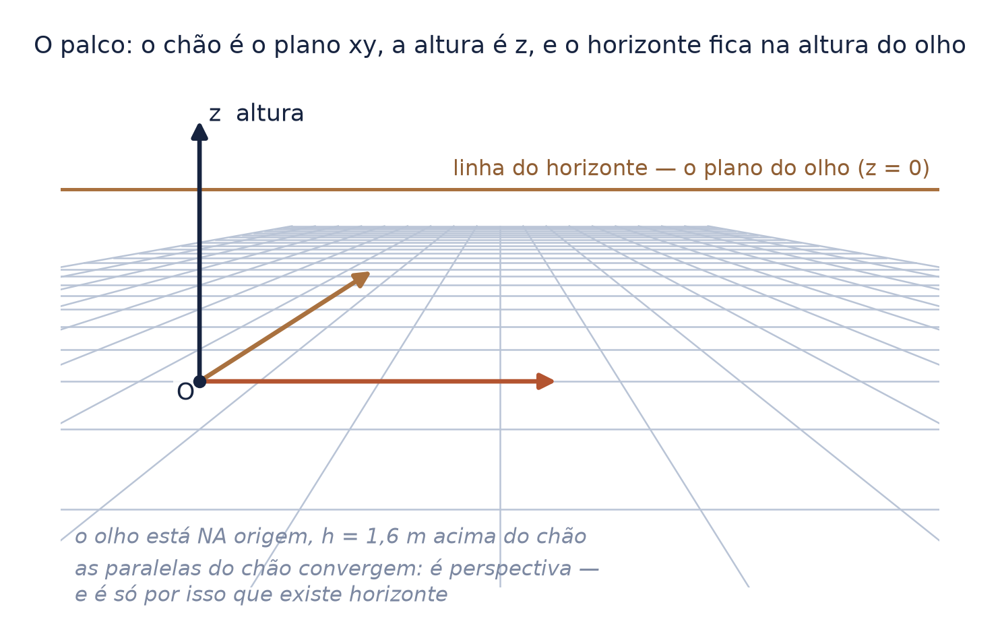
do registro ao pixel
Estação 2 · vetores
Segmento orientado: uma seta com nome
transcrição do quadro · prof. Rosivaldo · 10/08
1. Segmento orientado em um espaço \(E\).
Sejam \(A, B \in E\) pontos. O segmento \((A,B)\) é
orientado quando pomos \(A\) como origem e \(B\) como
extremidade.
é um pedaço de reta com ponta de seta. Começa
em \(A\), termina em \(B\). A ordem importa: \((A,B)\) e \((B,A)\)
são setas diferentes — apontam para lados opostos.
\(E\)
o espaço: o conjunto de TODOS os pontos (o
nosso 3D)
\(A \in E\)
lê-se "\(A\) pertence a \(E\)" — \(A\) é
um ponto do espaço
\((A,B)\)
lê-se "segmento A-B" — a seta que vai de
\(A\) para \(B\)
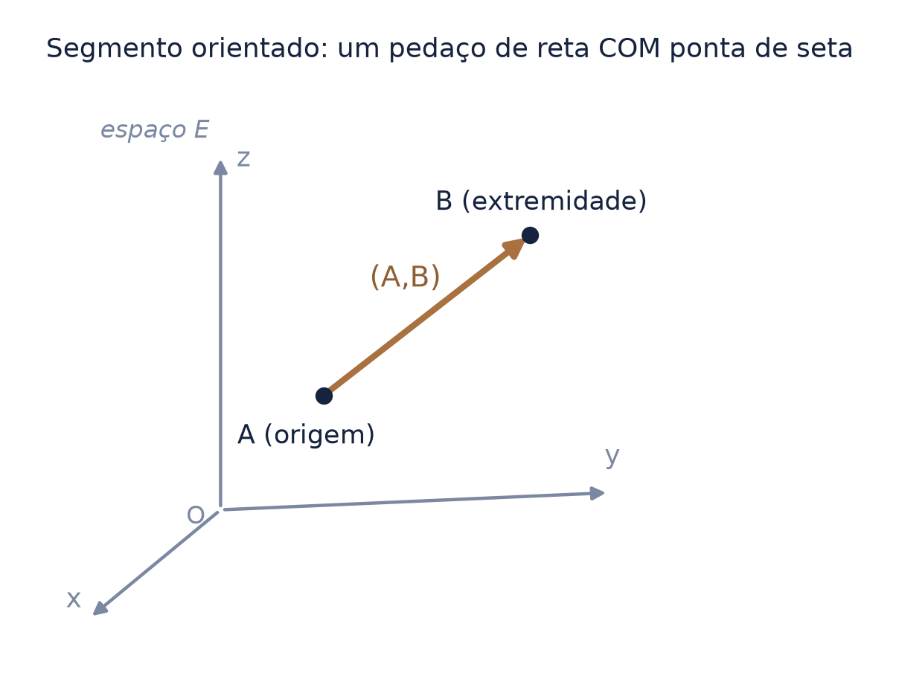
do registro ao pixel
Estação 2 · vetores
Direção: a reta que a seta segue
Uma seta tem três atributos, e o primeiro é este.
Sem ele não dá para dizer quando duas setas são "a mesma" — que é o
próximo passo.
transcrição do quadro · prof.
Rosivaldo · 10/08
A direção de \((A,B)\) é o ângulo
\(\alpha\) que o segmento forma com o plano \(xy\). Setas com o
mesmo ângulo correm sobre o mesmo trilho:
têm a mesma direção — o que não diz nada sobre
sentido nem sobre norma.
"alfa".
As duas frases não se contradizem: o ângulo identifica
o trilho, e o trilho é a direção — como dar o CEP de
uma rua sem que o CEP seja a rua.
direção NÃO é um número nem um ângulo: é
"sobre qual trilho a seta corre". Duas setas em trilhos paralelos têm
a mesma direção, mesmo apontando para lados contrários — e dos
três atributos da seta, esta folha fixa só este.
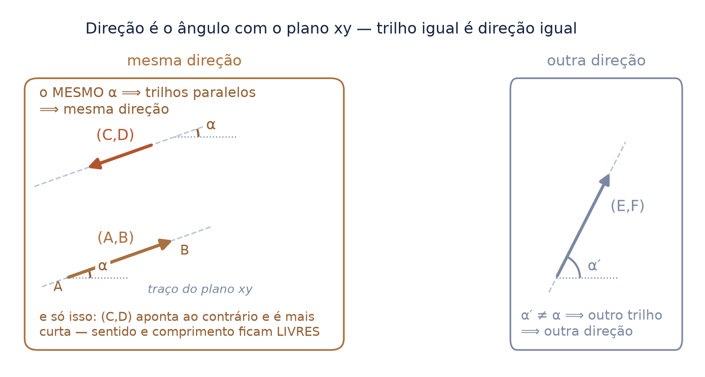
do registro ao pixel
Estação 2 · vetores
Quando duas setas são "a mesma": equipolência
transcrição do quadro · prof. Rosivaldo · 10/08
2. Segmentos orientados equipolentes.
\((A,B)\) e \((C,D)\) são equipolentes quando:
(i) \((A,B) \parallel (C,D)\) — têm a mesma direção;
(ii) têm o mesmo sentido;
(iii) têm a mesma norma:
"a norma do segmento A-B é igual à raiz quadrada de:
x-um menos x-dois, ao quadrado; mais y-um menos y-dois, ao quadrado;
mais z-um menos z-dois, ao quadrado". O símbolo \(\parallel\) lê-se
"é paralelo a".
a fórmula assustadora é só o
Pitágoras do colégio, usado duas vezes — a régua que
mede qualquer seta no espaço. Guarde-a: ela volta no final com outro
nome, \(\rho\) ("rô").
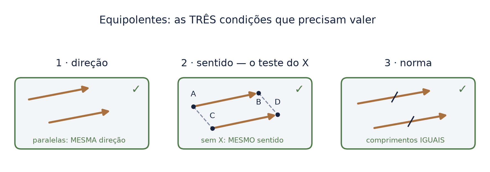
do registro ao pixel
Estação 2 · vetores
Como descobrir na prática: um teste para cada atributo
A definição diz o que é. Estes três dizem como
verificar, com a mão, sem conta nenhuma:
direção — prolongue as duas retas: se nunca se
cruzam (paralelas), mesma direção;
sentido — o teste do X:
ligue origem com origem (A–C) e extremidade com extremidade (B–D);
se as linhas não se cruzam, mesmo sentido; se
formam um X, sentidos opostos;
norma — meça de \(A\) até \(B\): é o
comprimento do segmento, um número nunca negativo,
na unidade da cena (aqui, metros).
"tamanho" é atalho de fala; a palavra exata é
comprimento. E os três testes valem juntos: falhar
em um já basta para as setas não serem a mesma.
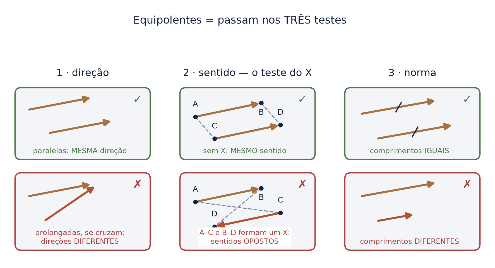
do registro ao pixel
Estação 2 · vetores
As três regras do "ser equivalente"
transcrição do quadro · prof. Rosivaldo · 10/08
Isso define uma relação de equivalência: \(R\) é de
equivalência quando:
\(\forall a\): \(aRa\) — reflexiva;
\(\forall a,b\): \(aRb \Rightarrow bRa\) — simétrica;
\(\forall a,b,c\): \(aRb,\ bRc \Rightarrow aRc\) — transitiva.
"para todo a: a se relaciona com a" · "para todos a
e b: se a se relaciona com b, então b se relaciona com a" · "para
todos a, b e c: se a se relaciona com b, e b com c, então a se
relaciona com c".
\(\forall\)
"para todo" — vale sem exceção
\(aRb\)
"\(a\) se relaciona com \(b\)" (aqui: é
equipolente a)
\(\Rightarrow\)
"implica" — se vale a esquerda, vale a
direita
"equivalente" = igual para o que nos
interessa. As três regras só garantem que esse "igual" se
comporta como igual de verdade: todo mundo é igual a si mesmo; se
\(a\) é igual a \(b\), \(b\) é igual a \(a\); e o atalho vale. A
equipolência passa nas três — pode carregar o título.
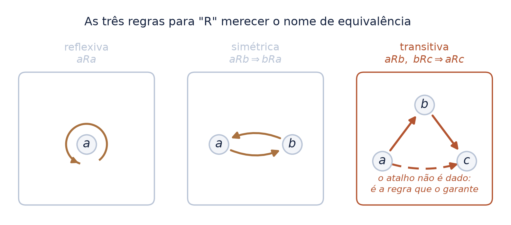
do registro ao pixel
Estação 2 · vetores
O batismo: vetor é o nome da família de setas
transcrição do quadro · prof. Rosivaldo · 10/08Classe de equivalência:
\[\overrightarrow{(A,B)} = \{(x,y) ;\ (x,y)\, R \,(A,B)\}\]
Vetor \(\vec{v}\) é uma classe de equivalência de
segmentos orientados equipolentes.
"a classe do segmento A-B é o conjunto dos pares
x-y tais que x-y se relaciona com A-B" — as chaves { } leem-se
"o conjunto de", e o ponto-e-vírgula, "tais que". \(\vec{v}\) lê-se
"vetor vê" (a setinha em cima marca: é vetor, não número).
a "classe" é o saco com TODAS as setas
equipolentes entre si — a fórmula lê-se "o conjunto dos \((x,y)\)
que se relacionam com \((A,B)\)". Damos UM nome ao saco:
\(\vec{v}\). Vetor não é uma seta — é a família inteira. Por isso
ele pode "morar" em qualquer lugar do espaço.
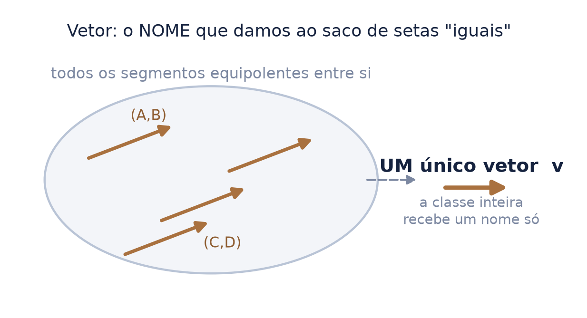
do registro ao pixel
Estação 2 · vetores
Somar é emendar: o fim de uma é o começo da outra
transcrição do quadro · prof. Rosivaldo · 10/08
Soma de vetores:
\[(A,B) + (B,D) = (A,D)\]
"segmento A-B mais segmento B-D é igual a segmento
A-D".
o fim da primeira seta é o começo da segunda, e o
resultado é o atalho direto — o terceiro lado do
triângulo.
Repare que o caminho do meio some: quem olha só as pontas não sabe
por onde se andou.
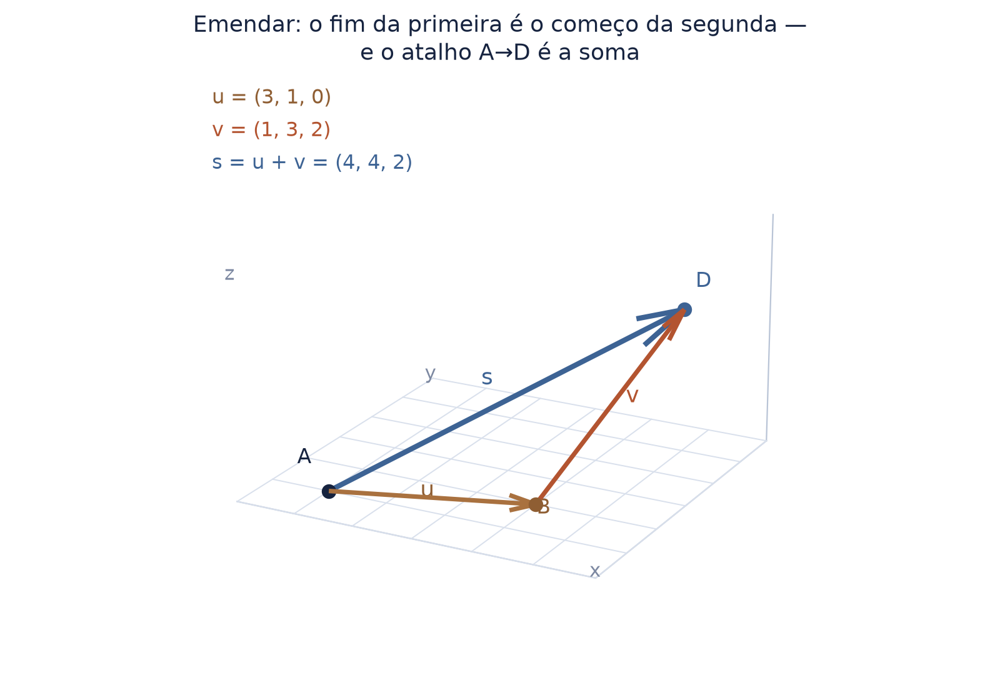
do registro ao pixel
Estação 2 · vetores
Multiplicar por um número: esticar e encolher
transcrição do quadro · prof. Rosivaldo · 10/08
Multiplicação de escalar por vetor:
\(k \in \mathbb{R}\), \(k\vec{v} \parallel \vec{v}\), com
\(\|k\vec{v}\| = |k|\cdot\|\vec{v}\|\):
\(|k| < 1\) "encolhe" · \(|k| > 1\) "estica".
"cá pertence aos reais; cá vezes o vetor vê é
paralelo ao vetor vê, e a norma de cá vê é igual ao módulo de cá vezes
a norma de vê".
\(k \in \mathbb{R}\)
"cá é um número real qualquer" —
\(\mathbb{R}\), a letra vazada, é o conjunto de todos eles
\(\parallel\)
"é paralelo a" — segue o mesmo trilho,
para um lado ou para o outro
multiplicar por um número muda só o
comprimento — o trilho é o mesmo. Número negativo
vira a seta ao contrário; o trilho continua o mesmo.
Estas duas operações são toda a base:
o resto da álgebra linear é consequência delas.
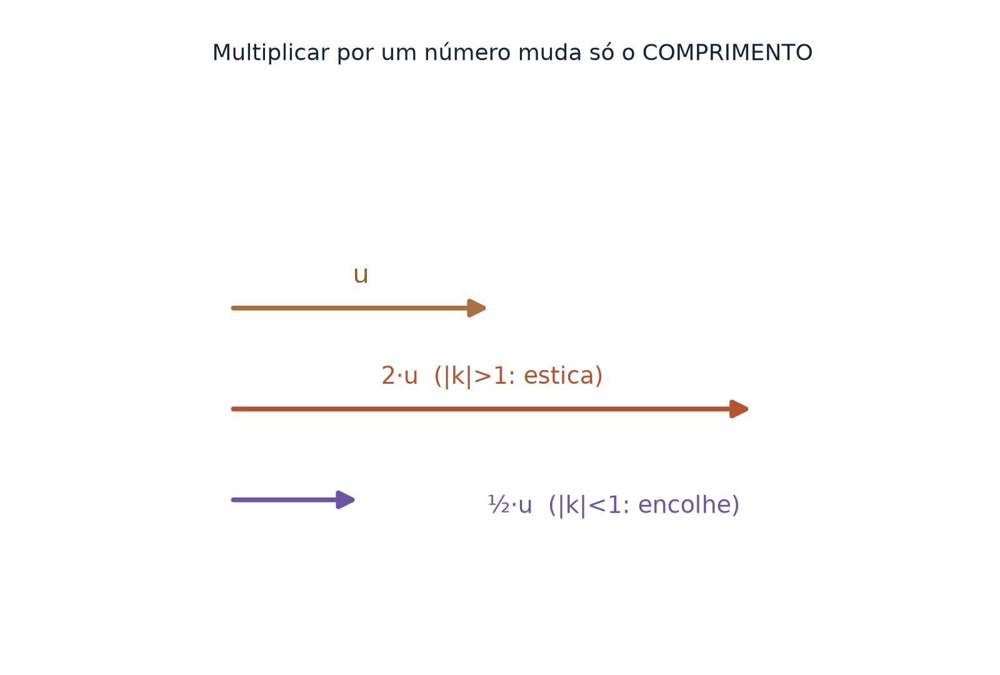
do registro ao pixel
Estação 2 · vetores
O comprimento não soma: a desigualdade do triângulo
emendar duas setas dá um atalho — e atalho é sempre
mais curto que dar a volta. Só quando as duas
apontam para o mesmo lado é que não há atalho a ganhar, e aí os
comprimentos somam.
Com \(u = (3,1,0)\) e \(v = (1,3,2)\):
\(\|u\| = \sqrt{10} \approx 3{,}16\) e
\(\|v\| = \sqrt{14} \approx 3{,}74\) — mas
\(\|u+v\| = 6\), e não \(6{,}90\).
"a norma de u é igual à raiz quadrada de dez,
aproximadamente três vírgula dezesseis"; "a norma de u mais vê é
igual a seis".
\[\|u+v\| \le \|u\| + \|v\|\]
"a norma de u mais vê é menor ou igual à norma de u
mais a norma de vê".
As coordenadas somam; o
comprimento, não.
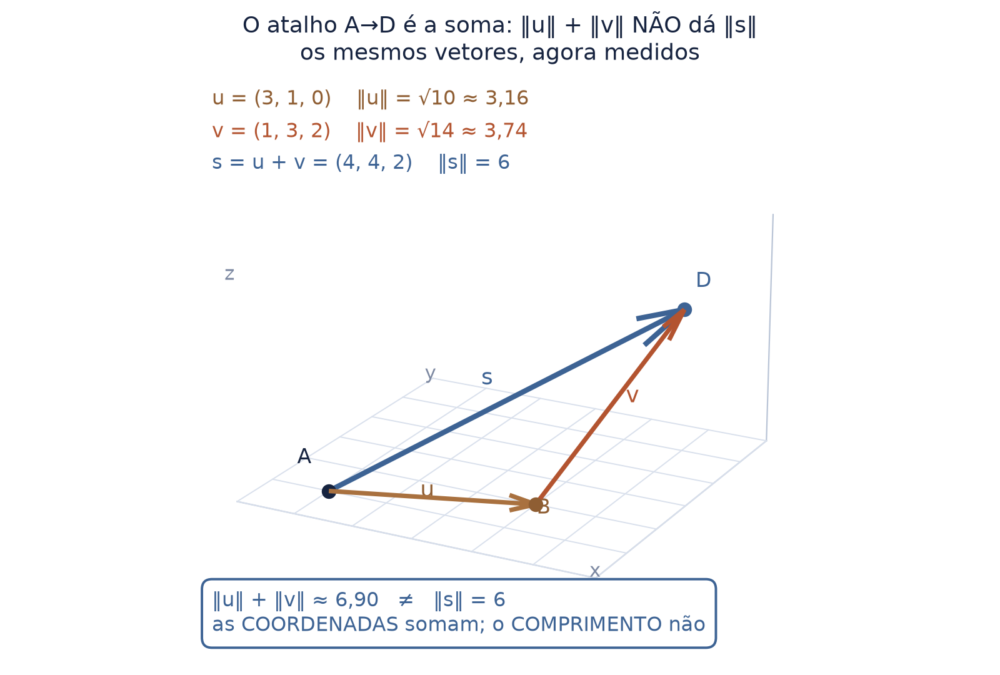
do registro ao pixel
Estação 3 · coordenadas
Escolher uma origem: cada ponto vira três números
Até aqui, nenhum número — só desenho. A geometria
analítica começa no momento em que escolhemos uma
origem e três eixos: aí todo ponto \(P\) ganha um
endereço \((x, y, z)\).
"o ponto pê ganha um endereço xis, ípsilon, zê" — a
vírgula separa as três coordenadas, na ordem largura, profundidade,
altura.
é como dar CEP aos pontos. O desenho não muda —
nós é que passamos a poder calcular com ele.
A escolha do autor, que vai importar até o último slide:
a origem é o observador — o olho de
quem vê a cena, a 1,6 m do chão.
O objeto de estudo: um cubo apoiado no chão, à frente do
observador. Cada vértice (canto), uma cor.
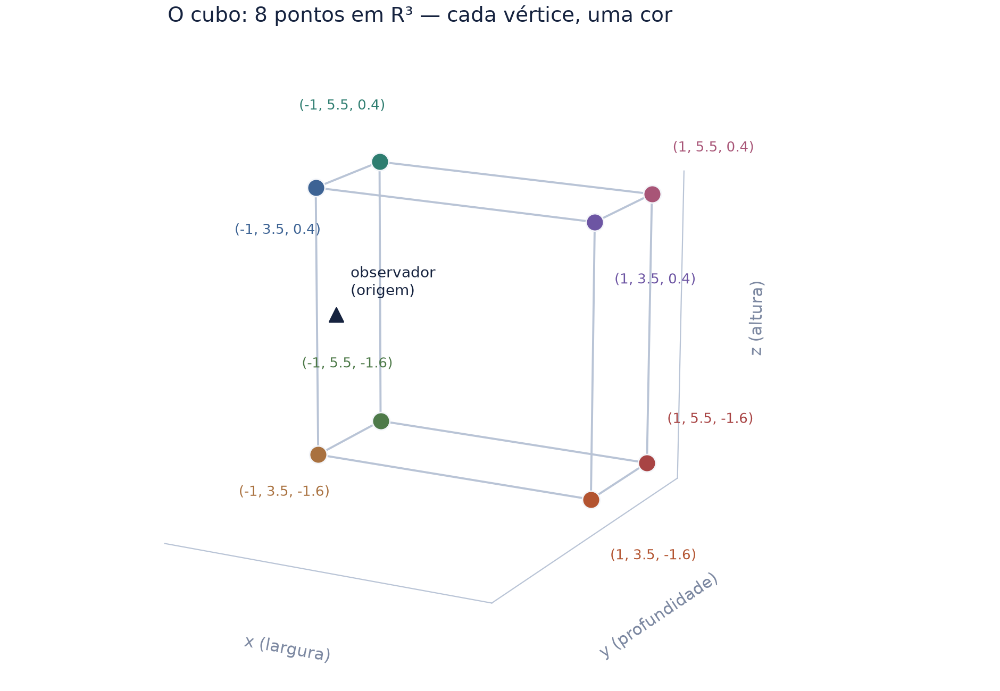
do registro ao pixel
Estação 3 · coordenadas
O horizonte é um plano — e ele dá as letras aos eixos
Com a origem no olho, dois planos horizontais
organizam a cena: o plano do olho (\(z = 0\)), que
passa pelo observador paralelo ao chão, e o chão
(\(z = -h\)), com \(h = 1{,}6\) m — a altura do olho.
"zê igual a zero" e "zê igual a menos agá".
o horizonte não é uma linha que existe no mundo: é o
plano da altura dos seus olhos, visto de lado — por
isso ele sobe e desce com você, e por isso some quando você deita.
Atenção à troca de letra: no plano, o
eixo vertical é o \(y\) — é o que se vê no colégio. Ao ganhar a
terceira dimensão, o plano inteiro vira chão e quem sobe passa
a ser o \(z\). Nada quebrou: mudou o número de eixos.
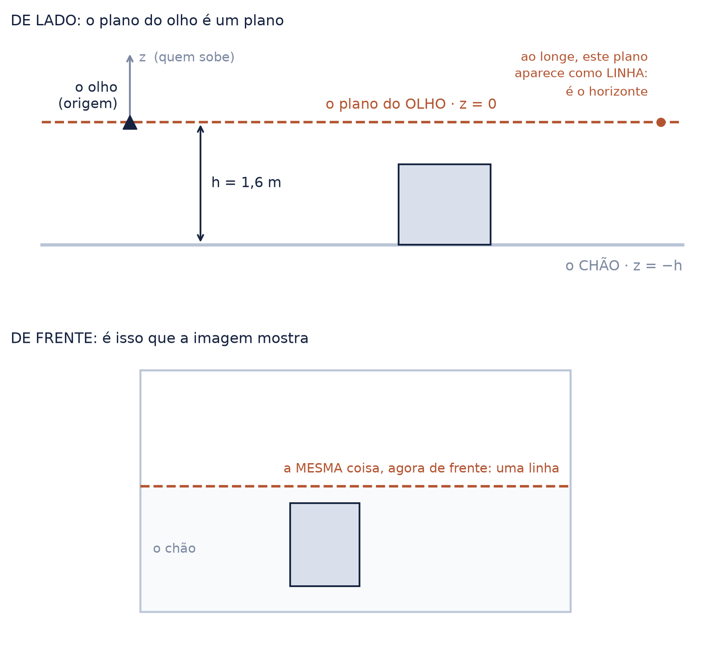
do registro ao pixel
Estação 3 · coordenadas
O ângulo volta: por que o horizonte nunca chega
Um ponto do chão visto \(\alpha\) abaixo do horizonte fica a
\[\rho = \frac{h}{\operatorname{sen}\alpha},
\qquad s = \frac{h}{\operatorname{tg}\alpha}\]
"rô é igual a agá sobre seno de alfa; ésse é igual a
agá sobre tangente de alfa".
\(\alpha\)
o ângulo entre o raio que vai até o ponto
e o plano do horizonte
\(\rho\)
a distância do olho até o ponto —
em linha reta
\(s\)
a distância no chão, do pé do
observador até o ponto
quanto mais perto do horizonte você olha, menor o
\(\alpha\) e mais longe está o chão que você vê. No horizonte,
\(\alpha = 0\): o seno zera, e a distância vai a infinito.
Aqui se fecha a conversa da estação 1: este
\(\alpha\) é a elevação, uma das duas medidas que
uma direção exige no espaço. A outra é para que lado do horizonte se
aponta. Duas medidas, nunca uma.
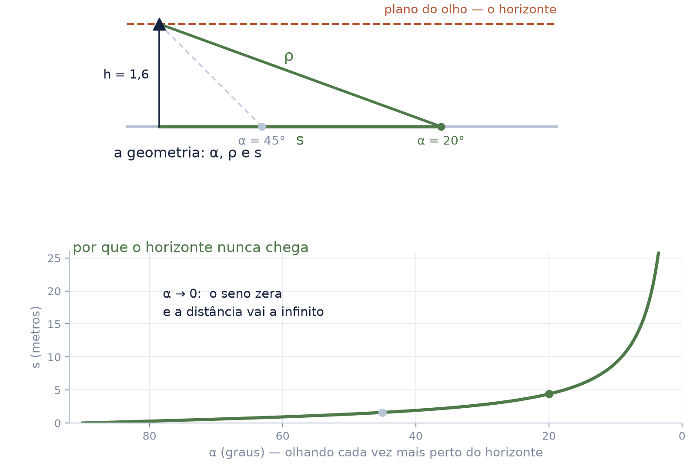
do registro ao pixel
Estação 3 · coordenadas
O cubo é uma tabela: a matriz 3×8
Escreva o endereço \((x,y,z)\) de cada vértice como uma coluna.
Oito vértices, oito colunas: isso é uma matriz — uma tabela de
números com superpoderes. As cores são as do slide anterior.
"xis, ípsilon, zê" — as três coordenadas de um
vértice, na ordem largura, profundidade, altura.
[
−1
1
−1
1
−1
1
−1
1
]
← x (largura)
M =
3,5
3,5
5,5
5,5
3,5
3,5
5,5
5,5
← y (profundidade)
−1,6
−1,6
−1,6
−1,6
0,4
0,4
0,4
0,4
← z (altura)
uma
coluna = um ponto. A matriz inteira = a forma. Nada
foi inventado: só arrumamos os números em pé, lado a lado.
do registro ao pixel
Estação 3 · coordenadas
Mexer na forma inteira = uma conta só
O \(k\vec v\) do quadro, aplicado às 8 colunas de uma vez:
\(k \cdot M\) — todo o cubo encolhe ou estica junto.
E girar? Girar também é uma tabela — a matriz de
rotação — multiplicando a nossa:
"érre vezes ême; érre é a matriz três por três:
primeira linha, cosseno de teta, zero, seno de teta; segunda linha,
zero, um, zero; terceira linha, menos seno de teta, zero, cosseno de
teta". \(\theta\) ("teta") é o ângulo do giro; seno e cosseno são os
do colégio.
multiplicar matrizes = aplicar a MESMA receita a
todas as colunas de uma vez. Siga as cores na figura: cada vértice
foi parar exatamente onde a conta mandou. É essa conta, bilhões de
vezes por segundo, que uma placa de vídeo faz.
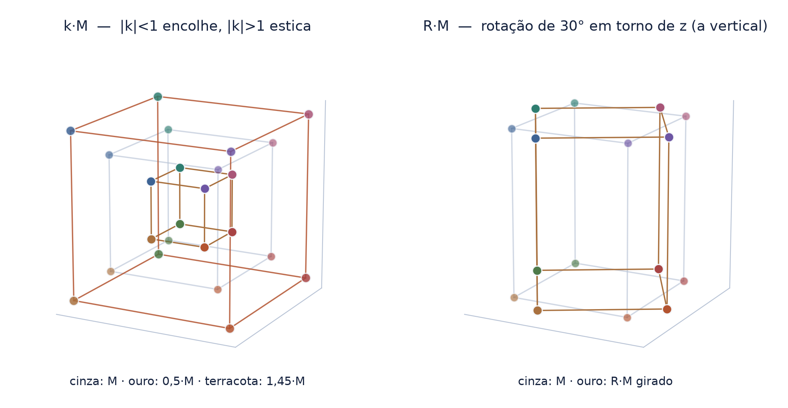
do registro ao pixel
Estação 4 · equações — a conta dentro do olho
Dentro do olho: um raio por pixel, uma conta por raio
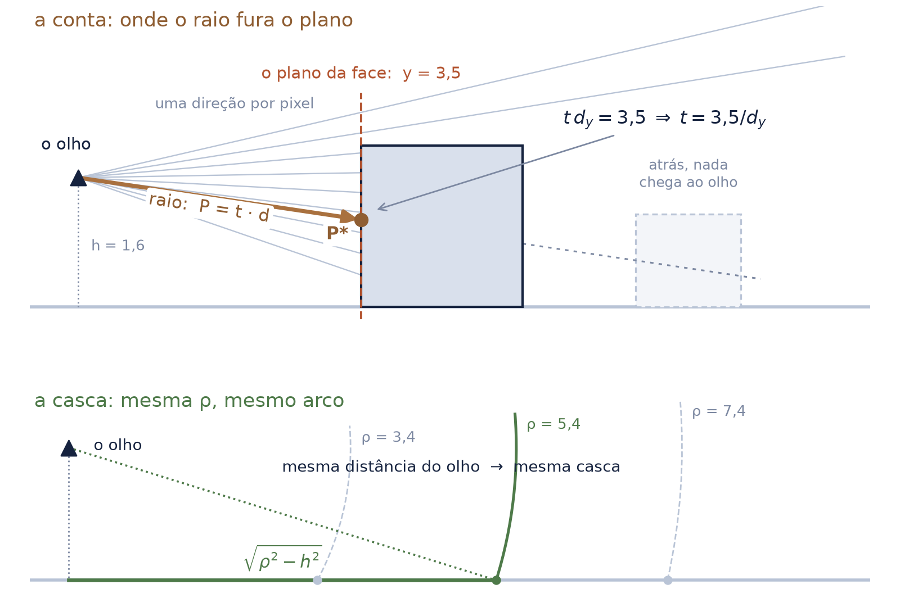
A luz do mundo converge para um
ponto dentro do olho — de cada direção chega um raio. Ver é
perguntar, direção por direção: "qual é a primeira coisa aqui?"
O pixel é essa pergunta.
A resposta é um sistema
linear: o raio sai do olho, \(P = t\cdot d\), e a superfície
vive num plano (a face do cubo: \(y = 3{,}5\)). Onde o raio a fura?
\(t\,d_y = 3{,}5\) ("lê-se: tê vezes dê-ípsilon igual a três
vírgula cinco"). No colégio eram duas equações e duas incógnitas;
aqui são três — a mesma ideia.
E a profundidade esconde:
no mesmo raio, só a primeira superfície responde — o
que está atrás nunca chega ao olho.
E este palco não fica na figura. É esta
estação que o exporta como mapa de profundidade e o entrega
ao modelo generativo: a grade do chão vira, lá, o número que diz a
cada pixel quão longe ele está.
Quem está à mesma distância \(\rho\) do olho mora na mesma
casca: no chão, círculos
concêntricos de raio \(\sqrt{\rho^2 - h^2}\) ("lê-se: raiz de rô
ao quadrado menos agá ao quadrado" — Pitágoras, de novo). É a
régua que serve a todos os olhares.
do registro ao pixel
Estação 5 · pixels
A fotografia é um recorte no tempo
O clique congela um único
instante: do mundo inteiro em movimento sobra uma fatia — de
tempo e de espaço.
Nesse recorte, o mundo 3D fica meio invisível, meio confuso: há o que
ficou fora do quadro, o que a borda
recortou pelo
meio, e o que ficou escondido atrás do que
veio antes.
E o recorte tem uma régua natural: fatiar a cena em planos paralelos ao
quadro — a profundidade \(d\) de cada coisa é a fatia em que
ela mora. O quadrado que encara a câmera vive inteiro
numa fatia só — por isso o mapa de profundidade por planos "parece" a
visão que a câmera tem dele; os quadrados girados atravessam fatias.
Recuperar o mundo a partir da foto é
difícil até para nós. É o que vamos pedir às réguas a seguir: dizer,
só com o recorte, quão longe
cada coisa estava.
do registro ao pixel
Estação 5 · pixels
O que o modelo generativo entende por "profundidade"
E um modelo generativo — um programa que cria
imagens novas e aprendeu só olhando fotografias prontas — o que será
que ele entende por "profundidade"? Sem nenhum controle
geométrico: à esquerda, "um cubo em perspectiva" —
convincente.
À direita, "o mapa de profundidade de um cubo"
(uma imagem onde perto = claro, longe = escuro) — e aqui a máscara
cai: ele pintou por face, uma face toda
branca, outra toda preta.
no mapa verdadeiro, a profundidade muda
dentro de cada face — o cubo é "girado": atravessa fatias,
como o quadrado do slide anterior. O modelo já viu milhares de mapas
e imita a aparência, mas não fez conta nenhuma. A régua está
com quem estudou o quadro — não com o pintor.
Z-Image Turbo local · 9 passos (as iterações do
pintor) · sementes fixas: mesma semente, mesma imagem.
do registro ao pixel
Estação 5 · pixels
Duas réguas para a mesma cena: d ou ρ
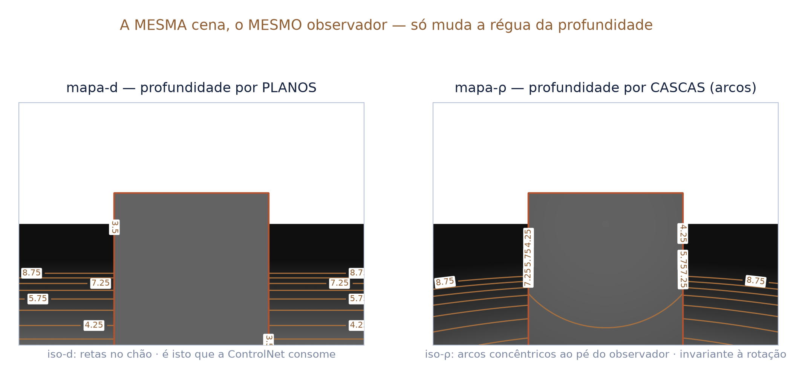
\( d = \rho\cos\theta \)
"dê é igual a rô vezes o
cosseno de teta"
As duas réguas já entraram em cena: as fatias d da
fotografia ("quantos passos à frente?") e as cascas ρ
do olho ("a quantos metros de mim?"). São dois nomes para o
mesmo longe — e uma linha de trigonometria os amarra: \(\theta\)
("teta") é o ângulo entre o raio do pixel e o "bem em frente". Acima,
a MESMA cena exportada nas duas réguas.
Mudar de régua é mudar de coordenadas.
do registro ao pixel
Estação 5 · pixels
A régua entregue: o modelo agora obedece à geometria
insumo: mapa-d — calculado por nós, um raio por pixelresultado condicionado pelo mapa-dinsumo: mapa-ρ (a mesma cena, régua dos arcos)resultado condicionado pelo mapa-ρ
ControlNet é um acessório que obriga o modelo a
respeitar um mapa dado. Entregamos a ele o mapa que nós mesmos
calculamos: mesmo pedido, mesma semente, só a régua
muda.
O cubo nasce exatamente onde o sistema linear
mandou — compare com o cubo "solto" de dois slides atrás, que
caía onde o modelo quis.
as duas réguas produzem a MESMA cena — a prova viva de
\(d = \rho\cos\theta\). A diferença não está no resultado; está em
quem serve a quantos enquadramentos.
Um mapa de profundidade guarda um valor por pixel:
a distância da primeira superfície que o raio
encontra.
\( d(x,y) \) — um escalar por raio
"dê de xis e ípsilon".
onde a superfície passa atrás de si mesma, o
mapa anota um degrau — mas a superfície de trás não entra.
Falta a continuidade através do cruzamento, que é o
que separa uma faixa de Möbius — a fita com meia torção,
que tem um lado só — de um anel comum, que tem dois.
Medido, não suposto. Rodada
pré-registrada de 2026-08-12, 32 folhas, julgamento às cegas: o mapa
entregou silhueta, posição e profundidade, e
nenhuma das 8 folhas firmou a meia-torção.
A própria régua declarou a rodada
ambígua — as previsões carimbadas antes não se
confirmaram. O que sobrevive não é vitória, é uma distinção:
régua que mede distância não carrega topologia — a parte
da matemática que estuda o que sobrevive quando se entorta sem rasgar:
quantos furos, quantos lados, se a volta fecha.
do registro ao pixel
Estação 5 · pixels — o insumo das próximas seis imagens
E quando a cena já existe? O estimador de profundidade
Já sabemos medir profundidade quando nós construímos a cena.
E quando a cena já existe — uma foto qualquer? Aí entra um
estimador de profundidade: um programa que olha uma
imagem plana e chuta, pixel a pixel, quão longe estava cada coisa.
Ele devolve o mesmo mapa 2,5D da estação anterior —
e é dele que saem as seis imagens a seguir.
a foto de partida — uma faixa de papel sobre a mesao mapa de profundidade que sai dela
do registro ao pixel
Estação 5 · pixels — o insumo das próximas seis imagens
O que a régua precisa achar na foto: contraste bem posto
Abrindo a imagem, dá para ver o que o estimador tem para trabalhar: a
luminância — o brilho de cada pixel, de 0 (preto) a 1
(branco), sem a cor — separa o papel do chão com folga
(0,48 de diferença); e as bordas vêm
realçadas: o gradiente, que é o tamanho do salto de
brilho de um pixel para o vizinho, chega a 0,32 na
silhueta.
a foto não tem textura nenhuma: é papel liso. O que ela tem é
figura destacada do fundo, silhueta nítida e uma sombra que ancora a
peça no plano. É só disso que a régua precisa.
Se a geometria está guardada no mapa, o
modelo generativo pode pintar o que quisermos por cima — e a forma
continua a mesma. As seis imagens a seguir são esse teste.
luminância — a separação de 0,48só as bordas — gradiente de 0,32 na silhueta
do registro ao pixel
Estação 5 · pixels — do mapa à imaginação
A mesma cena, seis Brasis
Pantanal — o recorte-aquárioAmazôniaCerradoCaatingaMata AtlânticaPampa
Seis pedidos diferentes — os seis biomas do Brasil — e a mesma geometria declarada —
mesma semente, mesmo mapa, mesmo sólido por baixo. A pintura é livre;
o desenho é nosso. É esta
divisão de trabalho que a aula inteira constrói: quem imagina não mede —
quem mede é a geometria.
do registro ao pixel
Estação 5 · pixels — os seis biomas
Amazônia
FLORA · O MATERIAL
Arumã (Ischnosiphon arouma)
o talo da planta é lascado em fitas e trançado em cestaria pelos povos do noroeste amazônico — a trama diagonal fechada é a assinatura desse trabalho
FAUNA
Arara-vermelha (Ara chloropterus)
a maior das araras brasileiras; vive em casal por toda a vida e nidifica em barrancos e ocos de árvores altas
O BIOMA
Maior floresta tropical do planeta, ocupa cerca de 49% do território brasileiro — quase metade do país num bioma só.
do registro ao pixel
Estação 5 · pixels — os seis biomas
Cerrado
FLORA · O MATERIAL
Capim-dourado (Syngonanthus nitens)
as hastes douradas do Jalapão, costuradas com seda de buriti pelas comunidades quilombolas; a colheita é regulada por lei e só pode começar em setembro, depois que a planta lança sementes
FAUNA
Ave de peito amarelo
o modelo compôs uma ave campestre a partir do pedido; no Cerrado real, o papel seria de um gaturamo ou um bem-te-vi
O BIOMA
A savana mais rica em espécies do mundo e o berço das águas do Brasil: dele nascem rios de oito das doze grandes bacias hidrográficas.
do registro ao pixel
Estação 5 · pixels — os seis biomas
Caatinga
FLORA · O MATERIAL
Couro curtido ao tanino
o material da cultura do vaqueiro sertanejo — gibão, perneira e chapéu de aba curta; a costura na borda é a mesma da selaria
FAUNA
Periquito-da-caatinga (Eupsittula cactorum)
faz ninho em cupinzeiros e em cactos; sobrevive à estiagem comendo flor, fruto e semente do mandacaru
O BIOMA
O único bioma exclusivamente brasileiro: floresta tropical seca que reverdece em dias quando a chuva chega.
do registro ao pixel
Estação 5 · pixels — os seis biomas
Mata Atlântica
FLORA · O MATERIAL
Cipó e taboa (Typha domingensis)
fibras de várzea trançadas em cestaria caiçara e caipira; a taboa é colhida na beira d'água, seca à sombra e trançada úmida
FAUNA
Tucano-toco (Ramphastos toco)
o maior tucano do mundo; o bico enorme e leve serve de radiador — ele regula a temperatura do corpo pelo bico
O BIOMA
Restam cerca de 12% da cobertura original, e ainda assim é um dos hotspots de biodiversidade do planeta.
do registro ao pixel
Estação 5 · pixels — os seis biomas
Pampa
FLORA · O MATERIAL
Lã crua e guasca
o velo de ovelha feltrado e as tiras finas de couro trançado — a guasca — que o trabalho gaúcho usa em rédeas, laços e adornos
FAUNA
Ave campestre
o modelo compôs uma ave de campo aberto; no Pampa real, o papel seria do joão-de-barro ou de um caminheiro
O BIOMA
Campos do extremo sul: apenas 2% do território brasileiro, com mais de 400 espécies de gramíneas nativas.
do registro ao pixel
Estação 5 · pixels — os seis biomas
Pantanal
FLORA · O MATERIAL
Palha de carandá (Copernicia alba)
a palmeira que resiste à cheia e à seca; a folha em leque vira chapéu, esteira e cesto de trama aberta, que deixa a água passar
FAUNA
Tuiuiú (Jabiru mycteria)
a ave-símbolo do Pantanal; constrói ninhos de até dois metros que a mesma família reaproveita por décadas
O BIOMA
A maior planície alagável do planeta: metade do ano é chão, metade é rio.
do registro ao pixel
Da régua à obra
Onde tudo isto desagua: Guariba
a cheiaa seca
Guariba é uma obra de ficção nascendo no Pantanal —
e toda a matemática deste seminário é a espinha técnica dela.
A mesma paisagem, duas águas: cheia e seca.
A mesma cena, duas réguas — o seminário
inteiro cabe nestas duas pranchas.
Nenhuma arte entra na obra por impressão: cada candidata passa por
julgamento às cegas (as imagens aparecem sem
identificação de origem — sobrevive só o que convence por si). As
duas pranchas acima são sobreviventes dessas mesas.
Concept art gerada localmente sob direção e
curadoria do autor — a máquina propõe variação; a invenção e o
veredito não se delegam.
do registro ao pixel
Da régua à obra
O que alimenta a obra: a mão
Nove páginas — de um caderno de cinquenta — desenhadas
à mão. É deste caderno, e só dele, que o estilo da
obra vai nascer: nenhum modelo aqui aprende com obra de terceiros.
O desenho treina a mão; a geometria treina a régua; o julgamento
às cegas treina o olho. Os três são o mesmo
estudo.
Normalmente os dois ofícios não moram na mesma pessoa — cientista
não é artista, e artista não é cientista. O caso aqui é particular,
e não por dom: pelo treino que esta tela documenta.
"Cientista não é artista, e artista não é
cientista — eu sou os dois."
— Mateus Alkimim, autor de Guariba
"Art and science have their meeting point in
method." (a arte e a ciência têm seu ponto de encontro
no método.)
— Edward Bulwer-Lytton, Eugene Aram, 1832
É a citação de 1832 que segura a frase acima: se o
ponto de encontro é o método, ser os dois não é privilégio — é
trabalho. E trabalho deixa recibo: as páginas ao lado.
A pergunta era quão longe. A resposta tem
nome: um número por pixel — a distância da primeira
superfície que o raio encontra.
A tabela de números da primeira folha é a mesma que sai no
fim. O que mudou é que agora sabemos quem decide cada
número — e é geometria, do começo ao fim.
E a régua não carrega tudo: distância não é topologia. Quem
sabe o que ela mede — e o que ela deixa de fora —
é quem estudou a
geometria.
Apêndice · onde este seminário mora
Onde a fundação desemboca
Este seminário ocupa seis nós — coordenadas no
plano, a reta, as cônicas, coordenadas no espaço, vetores e a equação
do plano. E é aqui que a fundação desemboca: ele
recebe dos negativos e do par
ordenado, que são os seminários 3 e 0.
Recebe também dos reais, da álgebra
elementar e da geometria espacial — o sólido
antes da terceira coordenada.
e paga em espaços vetoriais, produto
interno e formas quadráticas, que são o
G4; e em várias variáveis, que é
cálculo além deste curso.
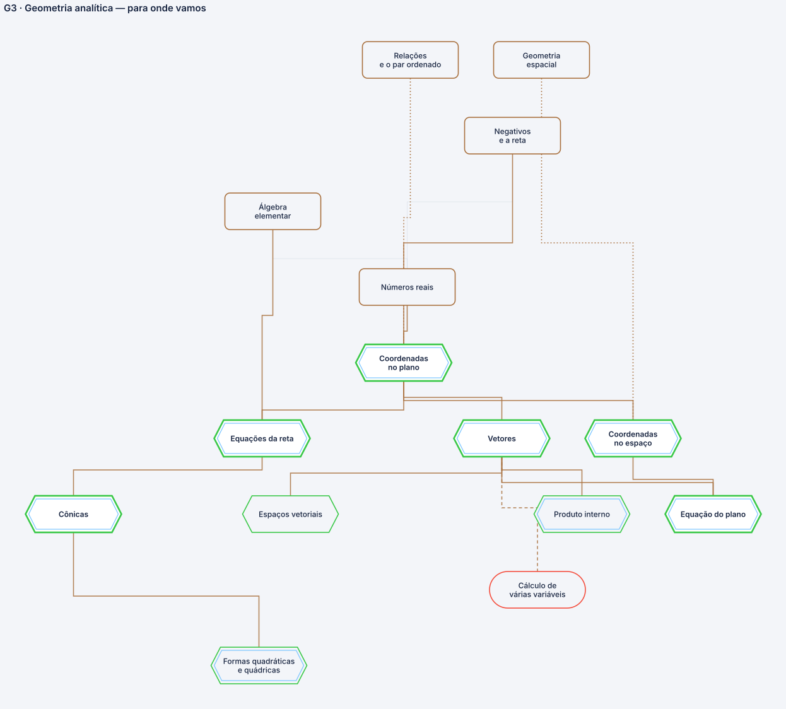
do registro ao pixel
Apêndice · dicionário didático · 1 de 2
As palavras da viagem
Folha de consulta: cada verbete traz a definição em palavras. As leituras em voz alta de cada expressão estão no dicionário didático, verbete por verbete.
pixel
o quadradinho da imagem; guarda um número por canal:
0 é preto, 255 é branco
ordem \(m \times n\)
o tamanho da tabela: \(m\) linhas por \(n\) colunas — altura primeiro
resolução
o nome do dia a dia para a ordem da matriz; o "número de pixels"
anunciado é a área: linhas vezes colunas
\(a_{ij}\)
a entrada da matriz: o número que mora na linha \(i\), coluna \(j\)
canal (R, G, B)
uma tabela de números por cor primária; multiplicadas pela sua cor e
somadas, as três dão a imagem
render
o achatamento do mundo em três dimensões nas tabelas de pixels
segmento orientado
seta com ordem: começa em \(A\),
termina em \(B\)
direção
o ângulo \(\alpha\) com o plano \(xy\);
mesmo \(\alpha\) = mesmo trilho (paralelas)
sentido
para qual dos dois lados a seta aponta
norma \(\|\cdot\|\)
o comprimento, por Pitágoras —
a régua
equipolência
mesma direção + sentido + norma:
"a mesma seta" nascida noutro lugar
relação de equivalência
as 3 regras do igual:
reflexiva, simétrica, transitiva
classe
o saco de todas as setas iguais entre si
vetor \(\vec v\)
o NOME do saco — a família inteira,
não uma seta
soma (Chasles)
emendar: fim de uma = começo da outra;
o resultado é o atalho
do registro ao pixel
Apêndice · dicionário didático · 2 de 2
As palavras da viagem
Continuação — das setas e dos números às réguas de profundidade.
escalar \(k\)
número comum; multiplicar só muda o
comprimento (e \(k<0\) inverte o sentido)
origem
o marco zero que dá endereço aos pontos —
aqui, o observador
coordenadas \((x,y,z)\)
o endereço: largura, profundidade,
altura
matriz
tabela de números — a imagem é uma; no cubo, cada coluna é um
vértice e a tabela inteira é a forma
multiplicar matriz
aplicar a mesma receita a todas as
colunas de uma vez
sistema linear
várias exigências ao mesmo tempo; a
solução satisfaz todas
reta \(P = t\,d\)
"ande na direção \(d\), pare no
instante \(t\)" — o raio do olho
plano
uma parede; a face do cubo é pedaço de
uma
interseção reta ∩ plano
onde o raio fura a parede —
um furo por pixel
profundidade
quão longe está o que o pixel mostra —
longe COMO é a pergunta
mapa-d
régua "passos à frente"; iso-d = retas no
chão; vale para UM enquadramento
mapa-ρ
régua "metros até o meu olho"; iso-ρ = arcos;
girar a câmera não muda nenhum ρ
\(d = \rho\cos\theta\)
a ponte entre as réguas —
mudar de régua é mudar de coordenadas
modelo generativo
pintor que imita a APARÊNCIA do
pedido, sem fazer conta de geometria
ControlNet (depth)
a mão que entrega a régua ao
pintor: "a cena é ESTA"
semente (seed)
o número que congela o acaso — mesma
semente, mesma imagem; a comparação vira justa